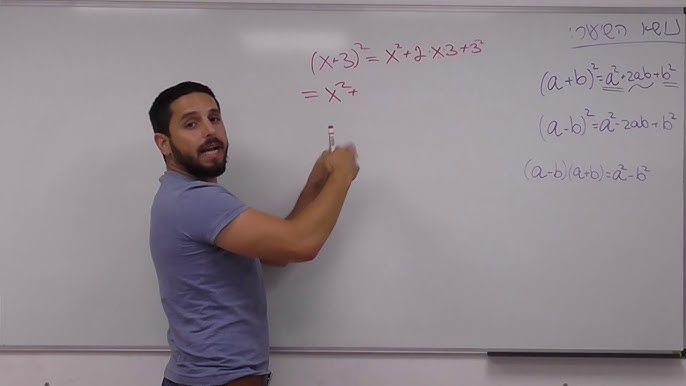
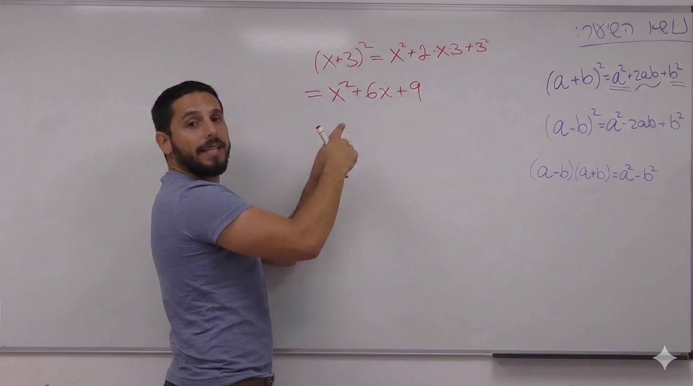

פרק #8 בסדרת לומדים להשתמש ב-Nano Banana Pro:
פורסם במקור ב LinkedIn
פרק #8 בסדרת לומדים להשתמש ב-Nano Banana Pro:
המודל לא רק יוצר תמונות אלא גם מבצע תהליך חשיבה ויזואלי. הוא מנתח את ההיגיון מאחורי סצנה ומפיק גרסה שמסבירה שלבים תהליכים ורעיונות.
זה מאפשר להמחיש נושאים מורכבים בצורה אינטואיטיבית וברורה.
כך תמונה הופכת לכלי למידה ולא רק לקישוט.
דוגמא לפרומפט:
"צור תמונה שמציגה את שלבי פתרון המשוואה על לוח לבן בצורה מסודרת שלב אחר שלב."
אפשר גם לבקש ממנו להשתמש באותו טוש ואותו כתב ולהשאיר את המרצה בתמונה. זה לא נתפס שהתמונה השניה נוצרה על ידי AI ולא אמיתית!
פשוט מדביקים ב gemini . google . com (לא לשכוח ללחוץ על סמל ה״בננה״)
והתוצאה לפניכם:

